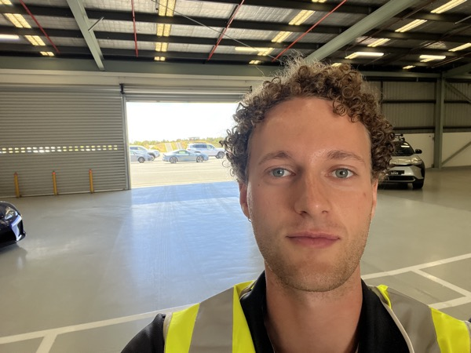
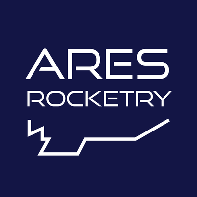

Mechanical Engineering · University of Melbourne
Mechanical engineering student with experience in hybrid propulsion, CAD/FEA, and multidisciplinary team leadership. Chief Engineer - ARES Rocketry. Two-time mechanical engineering intern.

Worked within the Product Planning and Development division to support mechanical design and operational efficiency. Responsibilities included part fitment, CAD modelling in CATIA, field testing, FEA validation, and data analysis to support design optimisation.
Supported senior engineers on building services projects across multiple disciplines. Attended client meetings, developed practical skills in AutoCAD and Revit, and contributed to documentation and design deliverables.
I'm a proud member of ARES. After joining in 2024 as part of the recovery sub-team, I quickly developed an interest in propulsion systems. I developed ARES's first hybrid fuel system and, in the past year have been acting Chief Engineer over the team (120 students).

Leading ARES as Chief Engineer — Coordinating multidisciplinary sub-teams, owning system integration, and ensuring every vehicle meets competition requirements through structured design reviews and validation campaigns.
Fabricated a spin-casting rig for manufacturing paraffin fuel grains with consistent port geometry. Designed tooling and refined the casting process to minimise voids and improve burn uniformity.
Developed MATLAB-based scripts to size a hybrid rocket motor — iterating on oxidiser–fuel ratios, chamber pressure, and nozzle geometry to determine optimal combustion chamber dimensions for target thrust and Isp.
Built and tested parachute deployment systems for flight recovery. Completed LDR, PCR, and CDR milestone reviews and co-authored technical documentation for competition judges.
Delivered technical presentations at the Victorian Rocketry Association.
I designed a tube-frame off-road buggy chassis. This involved researching roll-cage geometry, and system integration. This process included CAD modelling, FEA for structural validation, and materials selection. Although I'm yet to build the chassis, it's still an idea in the back of my head.
Design and analysis projects completed as part of the Bachelor of Mechanical Engineering Systems, covering biomechanics, machine design, FEA, and additive manufacturing.
Designed and 3D-printed a stackable planetary gearbox from scratch — covering gear geometry, stage ratio selection, tolerance stack-up for printed parts, and full assembly validation.
Modelled a hip joint prosthesis from engineering drawings in SolidWorks, then ran FEA and mass optimisation studies to minimise implant weight while maintaining structural safety margins. Included material selection analysis.
I'm a mechanical engineering student at the University of Melbourne. I'm a passionate engineer with a love for aerospace and automation. I have a deep appreciation for design elegance and interesting technologies.
Outside of engineering, music is a big part of my life. I make music and spend a lot of my spare time organising events with friends. I love to travel whenever I can, and when winter comes around I'm on the slopes.
University of Melbourne — B.Sc. Mechanical Engineering Systems, Expected June 2026
Wesley College — International Baccalaureate, 2021
Open to graduate roles, internships, and project collaborations.